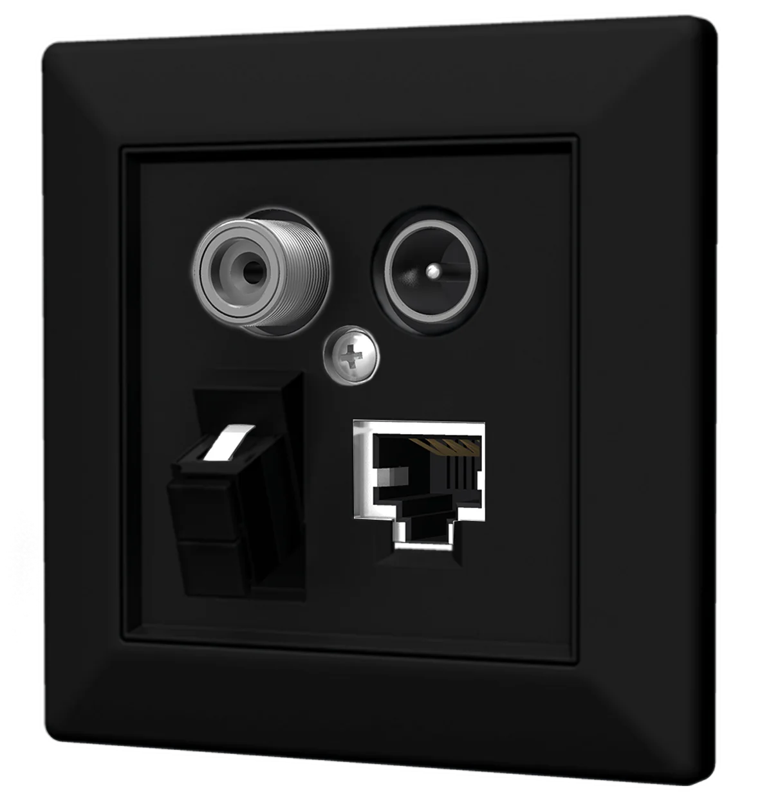
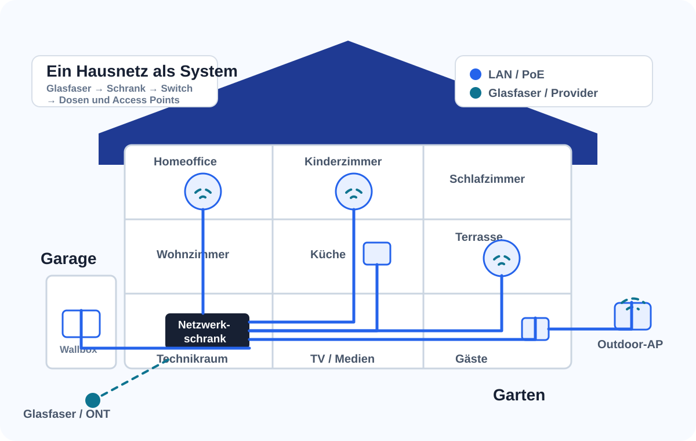
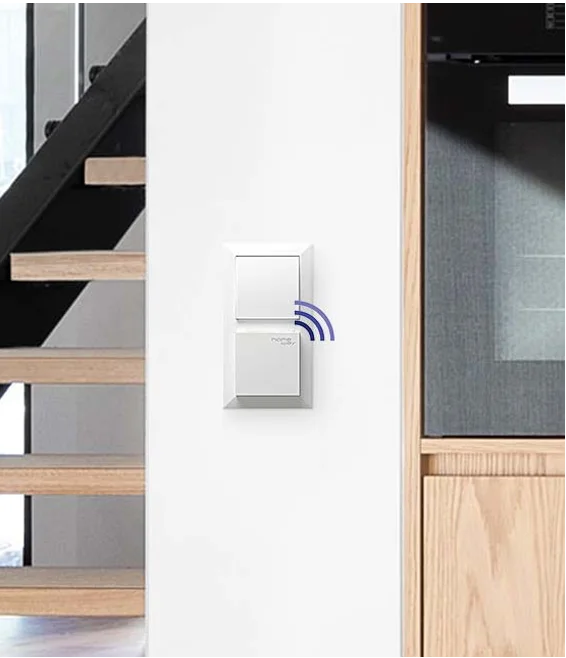
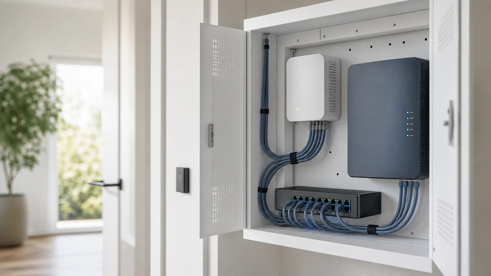
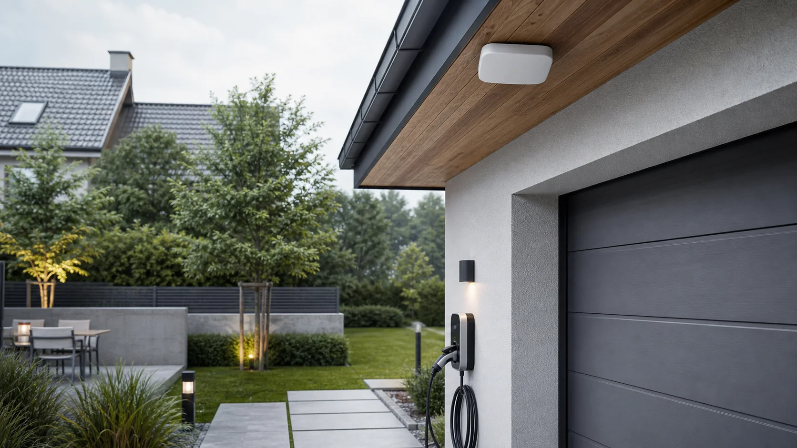

Drei Anschlüsse in einer Dose vereint
Modulare Anschlusslösungen für LAN, TV (SAT/CATV), Glasfaser und spätere Nutzung.
Wien · Niederösterreich · Burgenland
Wir planen Glasfaser, LAN, WLAN, Netzwerkschränke, Router und Access Points als Grundlage für zuverlässige Netzwerke – von Internet und Videoüberwachung bis zu Energie- und Smart-Home-Anwendungen.
Der Elektriker schafft Leitungswege und Strom. Wir planen und integrieren die Netzwerktechnik und koordiniere die digitalen Schnittstellen zu den beteiligten Gewerken.

Komponenten
Je nach CONNECT-Paket und Objekt kombinieren wir Komponenten von homeway und Ubiquiti UniFi zu einer passenden, erweiterbaren Gesamtlösung.

Modulare Anschlusslösungen für LAN, TV (SAT/CATV), Glasfaser und spätere Nutzung.

Access Points werden dort geplant, wo das Signal wirklich gebraucht wird.

Im Netzwerkschrank werden Patchpanel, Switch, Router, Provider-Anschluss, Stromversorgung und Patchkabel strukturiert zusammengeführt. So bleiben alle Anschlüsse übersichtlich dokumentiert und jederzeit zugänglich.
Projektbereiche
Garage, Terrasse, Garten und weitere Außenbereiche werden von Anfang an in die Netzwerkplanung einbezogen. Netzwerkschrank, LAN, WLAN und PoE bilden eine gemeinsame Infrastruktur – statt späterer Insellösungen.

Provider-Anschluss, Router, Switch und Patchpanel werden sinnvoll miteinander verbunden und übersichtlich dokumentiert. Bei Glasfaser wird der ONT (Glasfaserabschluss) fachgerecht in die Netzwerkinfrastruktur eingebunden.

Außenbereiche wie Garage, Gartenhaus und Terrasse werden mit WLAN, LAN und PoE für Anwendungen wie Wallbox, Kameras oder Torsteuerung von Anfang an in die Netzwerkplanung einbezogen.

Netzwerkanforderungen für PV, Speicher, Wallbox, Wärmepumpe und Smart-Home-Systeme werden frühzeitig berücksichtigt. Die technische Umsetzung erfolgt in Abstimmung mit den jeweiligen Fachpartnern.
Neubau & Sanierung
Alle Pakete werden passend zu Grundriss, Leitungswegen, Nutzung und gewünschter Erweiterbarkeit geplant.
Strukturierte Verkabelung mit zuverlässigem WLAN für die wichtigsten Räume und Anwendungen.
Typischer Einsatz: Neubau oder Sanierung mit klaren Basisanforderungen.
Professionelles WLAN mit zentral gesteuerter Netzwerktechnik für mehr Komfort, Übersicht und Erweiterbarkeit.
Typischer Einsatz: mehrere Stockwerke, Homeoffice, Garten oder höhere Ansprüche an Stabilität.
Professionelles Heimnetz inklusive Videoüberwachung und einer darauf abgestimmten Netzwerkinfrastruktur.
Standorte, Aufzeichnung und rechtliche Rahmenbedingungen werden projektspezifisch geklärt.
Hinweis:Bei Neubauten, Sanierungen und größeren Erweiterungen erfolgt die Detailplanung im Rahmen eines Planungstermins vor Ort. Die Planungspauschale beträgt 250 €, umfasst die technische Netzwerkplanung sowie ein individuelles Angebot und wird bei Beauftragung vollständig angerechnet.
Ablauf
Jede Stufe hat ein klares Ergebnis. Nach der Ersteinschätzung entscheiden Sie, ob eine detaillierte Planung oder ein Vor-Ort-Termin sinnvoll ist.
Grundriss oder Skizze, kurze Projektbeschreibung und – wenn vorhanden – Fotos senden. Hilfreich sind Angaben zu Räumen, Internetanbieter, gewünschten Netzwerk- und TV-Anschlüssen sowie besonderen Anforderungen wie Homeoffice, Gaming, NAS, Kameras oder Außen-WLAN.
Für Neubau und Sanierung planen wir die passende CONNECT-Lösung. Bestehende Netzwerke prüfen und optimieren wir mit einem professionellen Netzwerk-Check. Die Ersteinschätzung ist kostenlos. Netzwerk-Check und Vor-Ort-Planung sind kostenpflichtige Fachleistungen.
Leistungsumfang, Systemkomponenten, Netzwerkleistungen, Schnittstellen zu Elektroarbeiten und optionale Erweiterungen werden transparent ausgewiesen.
Router, Switch, PoE-Komponenten und Access Points werden konfiguriert, getestet und dokumentiert. Ein Prüfprotokoll mit Portplan, Prüfwerten, eventuell Fotos und Systeminformationen wird abschließend übergeben.
Nach der Inbetriebnahme prüfen wir die Funktion der installierten Netzwerkkomponenten. Erforderliche Nachjustierungen erfolgen im vereinbarten Umfang.
Klare Schnittstelle
Eine klare Aufgabenverteilung schafft Sicherheit im Projekt. Bauherr, Elektriker, Haustechnikpartner und Beratung & Technik arbeiten mit definierten Zuständigkeiten zusammen – für eine reibungslose Umsetzung der digitalen Infrastruktur.
Senden Sie einige Eckdaten oder Fotos. Gerhard Koschi klärt kostenlos, ob bereits eine Empfehlung möglich ist oder ein Vor-Ort-Check sinnvoll wäre.
Technische Vorkenntnisse sind nicht nötig · Umsetzung nur nach Ihrer Freigabe